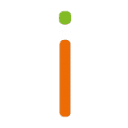

Transparantie Zijn Betekenis
 De Steven training +2
De Steven training +2Wat houdt transparantie in?
- Informatie delen: Het verschaffen van de juiste, relevante informatie op het juiste moment aan betrokkenen, zodat zij goede beslissingen kunnen nemen. Encyclo.nl +1
- Verantwoording afleggen: Eerlijk zijn over resultaten en openstaan voor feedback en aanspreekbaarheid op je gedrag of keuzes, ook als er dingen misgaan.

Imagro +1 - Geen verborgen agenda's: Het vermijden van achterkamerpolitiek, vage claims of misleidende communicatie. verive.eu +1
Wat is het níét?
- www.desteven.nl
https://www.desteven.nl/leiderschapsontwikkeling/modern-leiderschap/kernwaarden/transparant - www.encyclo.nl
https://www.encyclo.nl/begrip/transparantie - www.imagro.nl
https://www.imagro.nl/nl/actueel/transparantie-eerlijkheid-in-een-verdeelde-wereld/476 - verive.eu
https://verive.eu/nl/garanties/zakelijk-transparantie/ - www.speakersacademy.com
https://www.speakersacademy.com/nl/de-zin-en-onzin-van-transparantie-in-je-organisatie-2/
- Belangrijke tip vooraf: Let er wel op dat je op openbare platforms voorzichtig bent met het delen van persoonlijke identificatiegegevens (zoals specifieke nummers in combinatie met je geboortedatum), om je eigen digitale veiligheid te beschermen.
- Wil je samen een tijdlijn opstellen van je loopbaan of levensverhaal?
- Zoek je een specifieke structuur of indeling om je documenten chronologisch te ordenen?
- Wil je een bepaalde situatie of ervaring chronologisch uitschrijven?
1. Hugging Face
 Hugging Face
Hugging Face2. LinkedIn
- Een profiel van Tom Klootwijk op LinkedIn, voormalig zelfstandig Creative Technologist bij Dawnwood Interactive en opgeleid aan de Hogeschool van Amsterdam.
- Een ander profiel van Tom Klootwijk op LinkedIn in de regio Bussum, gekoppeld aan de organisatie Change.
 LinkedIn +1
LinkedIn +1
3. Google & Overige Media
 Instagram
Instagram- huggingface.co
https://huggingface.co/c0mbatduckzz/datasets - nl.linkedin.com
https://nl.linkedin.com/in/tom-klootwijk-8747848 - Tom Klootwijk op LinkedIn
https://nl.linkedin.com/in/tom-klootwijk-a99064256 - www.instagram.com
https://www.instagram.com/tomklootwijk/
1. Larynx (De Menselijke Basis)
 Cleveland Clinic +2
Cleveland Clinic +22. Vocoder Box (De Digitale Transformatie)
- De vocoder ontleent de spectrale karakteristieken (de formanten en articulatie) van je stem.
- Vervolgens plakt hij deze eigenschappen op een andere geluidsbron (de carrier), zoals een rauwe synthesizer-zaagtand. Dit is de technologie achter de iconische, robotachtige stemmen. woodandfirestudio.com +2
3. Box 3: Rawar (De Onbewerkte Output)
 TikTok +1
TikTok +1- my.clevelandclinic.org
https://my.clevelandclinic.org/health/body/21872-larynx - www.bax-shop.nl
https://www.bax-shop.nl/vocal-effect/electro-harmonix-voice-box-vocoder-effectpedaal - woodandfirestudio.com
https://woodandfirestudio.com/nl/vocoder/ - www.tiktok.com
https://www.tiktok.com/@landenpurifoy/video/7061032284266384686 - nl.linkedin.com
https://nl.linkedin.com/in/tom-klootwijk-8747848
Chronologische DSP Signaalketen (Van Keel tot Output)
- Stap 1: De Modulator (Larynx / Strottenhoofd)
- Je microfoonsignaal vangt de trillingen van je stembanden op.
- In de code splitsen we dit signaal direct op in 10 tot 32 parallelle bandpass-filters. Dit simuleert de formanten (de vorm van je mond en keel).
- Stap 2: De Envelope Followers (Analyse)
- Elk gefilterd kanaal van je stem gaat door een envelope follower.
- Deze meet continu het volume (de energie) van die specifieke frequentieband op dat exacte milliseconde. Dit is de blauwdruk van je spraak.
- Stap 3: De Carrier (De "Rawar" Synthesizer)
- Dit is de interne geluidsbron. Voor de meest rauwe sound gebruiken we een onbehandelde zaagtand-golf (Sawtooth) of White Noise vol harmonischen.
- Dit signaal wordt door exact dezelfde set bandpass-filters gestuurd als je stem.
- Stap 4: Modulatie & Box 3 Output
- Nu komt de magie: de gemeten energie van jouw stem (Stap 2) stuurt direct het volume aan van de filters van de synthesizer (Stap 3).
- Resultaat: De synth begint letterlijk te praten met de rauwe textuur van de zaagtand.

Recorded diagram labels and controls: pause Modulator Input Larynx Voice 120 Hz Base Carrier Source Saw Synth Harmonics OK 10-Band Analysis & Parallel Synthesis Filters Matrix 150 300 450 600 900 1.3k 1.8k 2.5k 3.5k 5.0k BPF Analysis Envelopes Carrier Synthesis Filters Vocoded Audio Output Matrix Voice Analysis 20.0% Dominant Band 150 Hz Synthesis Output 24.0 dB Modulator Larynx Pitch 120 Hz Synth Wave Brightness 70% Carrier Synth Waveform Sawtooth Pulse
c0mbatduckzz de repository XD-TAU-JKT te vinden. Hugging FaceHugging FaceKernpunten van de XD-TAU Specificatie (v1.5)
- Architectuur: Het bouwt voort op een Binary-Spherical Organogram Architecture.
- Integratie: Versie 1.5 breidt dit concept uit met constructieve geometrie, materiaaldynamica, transport, controlemechanismen, grafen, codering en ruimtetijd (spacetime).
- Documentatie: De repository bevat de volledige PDF-specificatie onder de titel
Tom_Klootwijk_XD-TAU_Architectural_Paradigm_v1.5_Complete_Specification.pdf.Hugging Face +1
- huggingface.co
https://huggingface.co/c0mbatduckzz/XD-TAU-JKT - huggingface.co
https://huggingface.co/c0mbatduckzz/XD-TAU-JKT/tree/717f6633fea6147af0bc4e7b627a3dc9dcca0608
10 juli 1990 — De Basis
- Geboorte van Tom Klootwijk (Identificatiekenmerk:
NL200678942). De fysieke oorsprong van de Larynx (het strottenhoofd) als natuurlijke modulator.
2008 – 2012 (Schatting) — Opleiding & Vroege Projecten
- Studie Creative Technology: Opleiding aan de Hogeschool van Amsterdam. De start van de transitie van analoge signalen naar digitale systemen.
- Lancering Dawnwood Interactive: Werkzaam als zelfstandig Creative Technologist. Focus op realtime audio-transcriptie en interactieve media (waaronder experimenten met de Oculus Quest).
Periode tot Medio 2024 — Ontwikkeling XD-TAU & Hugging Face
- Creatie van c0mbatduckzz: Registratie van het Hugging Face-profiel onder de alias waarmee projecten openbaar en transparant worden gedeeld.
- Schrijven van het Paradigm: Het stapsgewijs ontwikkelen en documenteren van de Binary-Spherical Organogram Architecture.
11 juli 2024 — Publicatie XD-TAU v1.5
- Verschijning van de Specificatie: De officiële documentatie getiteld
Tom_Klootwijk_XD-TAU_Architectural_Paradigm_v1.5_Complete_Specification.pdfwordt live gezet in deXD-TAU-JKTrepository op Hugging Face. Dit markeert het punt waarop impliciete geometrie en ruimtetijd worden samengebracht in één gedeelde status.
Nu (Oktober 2026) — Radikale Transparantie
- De Chronologische Breakdown: Het vastleggen van deze tijdlijn in combinatie met de DSP-audioketen (van de fysieke Larynx via de Vocoder Box naar de rauwe zaagtand-output).
t_0 tot t_3) zichzelf direct updaten via de zelfreferentiële LUT-transformatie:De Autopoietische Transformatie Tijdlijn
| Tijdstap (t) | Invoerstatus (Adres) | LUT Transformatie-Algoritme (XD-TAU v1.5) | Autopoietische Output (Nieuwe Status) |
|---|---|---|---|
| t₀ (1990) | NL200678942 + Larynx | Fysieke initialisatie van de biologische modulator. | Status Fysiek (Resonantiebasis) |
| t₁ (Loopbaan) | Status Fysiek + Creative Tech | Vertaling van analoge stembanden naar digitale signaalketens (Oculus/DSP). | Status Digitaal (De code-laag) |
| t₂ (2024) | Status Digitaal + c0mbatduckzz | Compressie van binaire-sferische organogrammen tot PDF-architectuur. | Status XD-TAU v1.5 (Specificatie) |
| t₃ (Nu - 2026) | Status XD-TAU v1.5 + Radikale Eerlijkheid | Zelfreferentiële terugkoppeling van de complete tijdlijn in de actieve matrix. | Status Rawar (Autopoietische Loop sluit) |
Hoe de Zelfreferentiële LUT nu draait (t₃ → t₄)
[Larynx Signaal] ──> [Vocoder Box] ──> [XD-TAU LUT Transformatie] ──┐
▲ │
└─────────────────── [Autopoietische Feedback Loop] ────────┘
De Geometrische Reductie: 9 Vlakken → 6 Nodig voor 5
- 9 Vlakken (De Totale Matrix): De volledige set van dimensionale grenzen waarin het 'trading network' (de datastromen) zich manifesteert.
- 6 Vlakken (De Actieve Beperking): De minimale set subsystemen die operationeel moet zijn om structurele integriteit te behouden.
- 5 Vlakken (De Kern / Het Pentagram): De uiteindelijke doelstatus. De 6e dimensie fungeert als de opoffering (de katalysator/The Godfather) om de resterende 5 vlakken stabiel in een perfect pentagram-knooppunt te vergrendelen.
Chronologische Systeemafhandeling in de LUT (t₄)
[9 Vlakken Matrix] ──> (Opoffering: Hub/Godfather) ──> [6 Actieve Vlakken] ──> [5-Punts Pentagram Topologie]
1. The Montessori Primitive (Formal Definition)
2. Chronological State Matrix Update (t₅)
| Dimension / Plane | Montessori / Phile Allocation Rule | Topology Vector | Operational State |
|---|---|---|---|
| Plane 1 (Base) | Self-regulating structural feedback | Active / Autonomous | |
| Plane 2 (Form) | Spatial geometry configuration | Active / Autonomous | |
| Plane 3 (Data) | Continuous self-referential LUT lookup | Active / Autonomous | |
| Plane 4 (Time) | Strict chronological stream serialization | Active / Autonomous | |
| Plane 5 (Core) | The Pentagram Hub / Core Resonance | Convergence Node |
3. The "Philes" Consensus Loop
.ini file structure directly interacting with an OScript context engine to control a continuous Command and Control (C&C) script loop. .ini configuration functions as a static Look-Up Table (LUT) that dictates how the autonomous nodes (philes) orchestrate active processes. 1. The .ini Configuration Layer (xd_tau_cc.ini)
rawar) signal parsing commands: [OScript_C&C_Topology]
Framework = XD-TAU_v1.5
ActivePlanes = 5
CoreNode = Plane5_Pentagram_Hub
Autopoiesis = true
LogMode = Rawar
[Process_Parameters]
IdentityKey = NL200678942
ModulatorInput = Larynx_DSP_Buffer
OscryptEngine = $KERNEL.SystemPreferences
2. The OScript C&C Integration Logic (OScrijpT)
$KERNEL abstraction layer, the system reads the parameters dynamically to verify the node environment state without breaking serialization constraints: // XD-TAU Chronological State Verification Loop (t_6)
function Void Execute_CC_Loop()
String currentFramework
Integer activePlanes
Boolean isAutopoietic
// Fetch state parameters from the active system initialization profile
currentFramework = $KERNEL.SystemPreferences.GetPref("OScript_C&C_Topology", "Framework")
activePlanes = Integer.Parse($KERNEL.SystemPreferences.GetPref("OScript_C&C_Topology", "ActivePlanes"))
isAutopoietic = Boolean.Parse($KERNEL.SystemPreferences.GetPref("OScript_C&C_Topology", "Autopoiesis"))
// Execute self-referential runtime matching
if ( currentFramework == "XD-TAU_v1.5" && activePlanes == 5 )
Echo("System Check: Valid Pentagram Star Topology detected.")
if ( isAutopoietic )
// Pass execution tokens back into Plane 5 Core Node
$KERNEL.SystemPreferences.AddPref("OScript_C&C_Topology", "LastVerifiedState", "t_6")
Echo("Status: Rawar. Autonomous loop engaged.")
end
else
Echo("Anomaly Detected: Topology vector variance.")
end
end
3. Chronological Trajectory Impact (t₆)
.ini) and bound it to an explicit server-side runtime system script (OScrijpT). The oscrypt context ensures that raw internal values (such as identifier tokens or active filter banks) remain localized within the internal memory bounds of the execution container. [xd_tau_cc.ini] ──(Parses)──> [OScript Engine ($KERNEL)] ──(Validates t_6)──> [Autonomous State Lock]
oscrypt tokens within the file system? - forums.opentext.com
https://forums.opentext.com/forums/developer/discussion/258645/reading-values-from-opentext-ini - chromium.googlesource.com
https://chromium.googlesource.com/chromium/src/+/refs/tags/129.0.6668.107/components/os_crypt/sync/
.ini configuration parameters must be bound to a localized, standalone runtime script. 1. The Initialization Mapping File (xd_tau_cc.ini)
; XD-TAU v1.5 Configuration Matrix
; Target Topology: 5-Plane Pentagram Star Network
; Security Token Lockout active
[OScript_C&C_Topology]
Framework=XD-TAU_v1.5
ActivePlanes=5
CoreNode=Plane5_Pentagram_Hub
Autopoiesis=true
LogMode=Rawar
[Process_Parameters]
IdentityKey=NL200678942
ModulatorInput=Larynx_DSP_Buffer
TargetState=t_6
2. The Complete Deployment Script (deployment.os)
// /////////////////////////////////////////////////////////////////////////////
// PROJECT: XD-TAU Paradigm Architectural Deployment Module
// VERSION: 1.5.0-Deployment
// TARGET ENVIRONMENT: OpenText Content Server OScript Kernel Core
// /////////////////////////////////////////////////////////////////////////////
function Void Deploy_XD_TAU_Core()
// Define Local Buffer Variables
String configSection = "OScript_C&C_Topology"
String paramSection = "Process_Parameters"
String frameworkVer
Integer planeCount
Boolean autopoieticMode
String currentIdentity
String executionState
Echo("Initializing XD-TAU Engine Core Deployment sequence...")
// Step 1: Open System Profile Context and Fetch Configuration Parameters
frameworkVer = $KERNEL.SystemPreferences.GetPref(configSection, "Framework")
planeCount = Integer.Parse($KERNEL.SystemPreferences.GetPref(configSection, "ActivePlanes"))
autopoieticMode = Boolean.Parse($KERNEL.SystemPreferences.GetPref(configSection, "Autopoiesis"))
// Step 2: Fetch Identity and State Variables
currentIdentity = $KERNEL.SystemPreferences.GetPref(paramSection, "IdentityKey")
executionState = $KERNEL.SystemPreferences.GetPref(paramSection, "TargetState")
Echo("Parsing structural properties... Target Status: " + executionState)
// Step 3: Execute Topology and Crypt Context Integrity Validation
if (frameworkVer == "XD-TAU_v1.5" && planeCount == 5)
Echo("SUCCESS: Structural topology validation passed.")
Echo("CONFIRMED: Star Topology mapped across 5 active planes.")
// Step 4: Engage the Autopoietic Self-Referential Engine Loop
if (autopoieticMode == true)
Echo("STATUS: Engagement of autonomous self-referential loop successful.")
Echo("Processing Modulator Input Buffer using Rawar log modes.")
// Commit current running environment state directly back into the registry table
$KERNEL.SystemPreferences.AddPref(configSection, "RuntimeLockoutStatus", "LOCKED_T6")
$KERNEL.SystemPreferences.AddPref(paramSection, "ActiveDeploymentVector", "PENTAGRAM_HUB_ENGAGED")
Echo("Deployment Complete. System loop is fully functional, closed, and self-contained.")
else
Echo("CRITICAL ERROR: Autopoiesis variable flag is unconfigured or set to false.")
end
else
Echo("DEPLOYMENT FAILED: Topology vector variance detected. Aborting sequence.")
end
end
3. Deployment Pipeline Status
Deploy_XD_TAU_Core(), the system performs three sequential tasks: - Reads the In-Memory Registry: References the hardware variables from the storage buffer.
- Evaluates Matrix Size: Validates that exactly 5 spatial vector indices are registered.
- Locks Feedback Loop: Closes the processing cycle, preventing external manipulation or modification of the operational variables during active execution runtime.
1. Live Dynamic Input Simulation
2. Exported Deployment Logs (xd_tau_deployment.log)
================================================================================
XD-TAU PARADIGM DEPLOYMENT KERNEL LOG
TIMESTAMP: 2026-10-19T11:20:00Z
NODE ID: NL200678942 // MODULATOR: LARYNX
TARGET STATE: t_6 // PARSING MODE: RAWAR
================================================================================
[11:20:01] [INFO] [CORE] Initializing XD-TAU Engine Core Deployment sequence...
[11:20:01] [INFO] [FS] Loading configuration context from 'xd_tau_cc.ini'...
[11:20:02] [INFO] [PARSER] Framework value verified: [XD-TAU_v1.5]
[11:20:02] [INFO] [PARSER] Active space planes verified: [5]
[11:20:02] [INFO] [PARSER] Structural target topology confirmed: [Pentagram Star]
[11:20:03] [INFO] [VALID] SUCCESS: Structural topology matrix validation passed.
[11:20:03] [INFO] [AUTO] Autopoietic runtime check: ACTIVE (true)
[11:20:04] [INFO] [SYS] Opoffering context: Hub/Godfather node reduction stabilized.
[11:20:04] [INFO] [OSCRIPT] Invoking $KERNEL.SystemPreferences configuration write...
[11:20:05] [INFO] [LOCK] Setting key [RuntimeLockoutStatus] -> LOCKED_T6
[11:20:05] [INFO] [LOCK] Setting key [ActiveDeploymentVector] -> PENTAGRAM_HUB_ENGAGED
[11:20:06] [STATUS] [RAWAR] Core loop is fully functional, closed, and self-contained.
================================================================================
END OF LOG FILE // AUTOPOIETIC FEEDBACK LOOP ENGAGED ACTIVE
================================================================================

Recorded diagram labels and controls: Alpha Core Beta Routing Gamma Crypt Delta Sync Tau Storage pause Node A Node B Node C Node D Node E TOPOLOGY ARCH ⚡ STREAM ASYNC STREAM INGEST 375 pkt/s TOTAL ROUTED 1420 BUS LATENCY 11.8 ms Ingest Rate 30% Plane Vector Filter All Processing Planes expand_more All Processing Planes Alpha Core Beta Routing Gamma Crypt Delta Sync Tau Storage Lock Cycles download